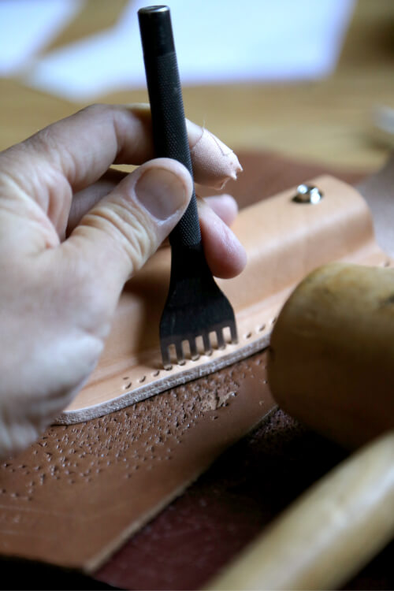
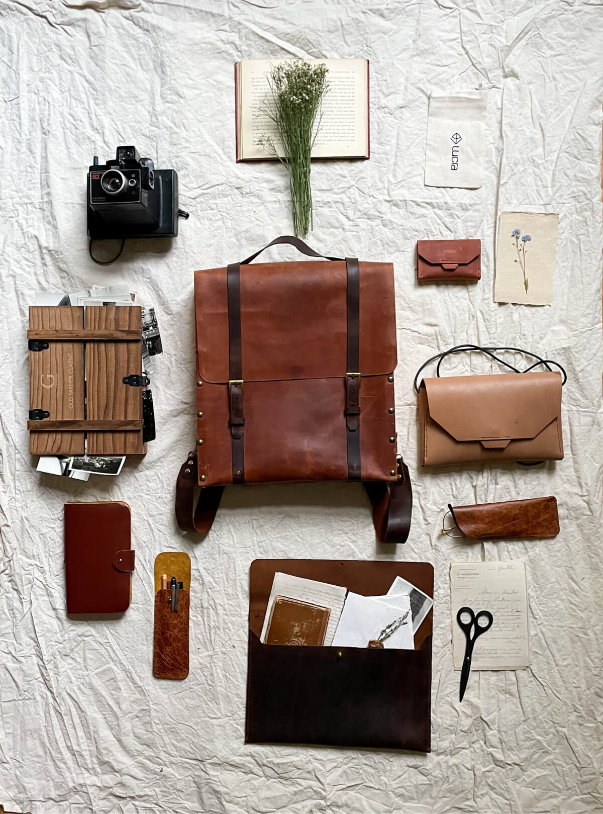

品牌理念

暖觸專注於打造皮革手工藝品以及提供客製化服務，我們相信手工製作的皮革產品擁有著獨特的溫度，不僅是一種產品，更是一種故事和情感的傳遞方式，每一個作品都有各自獨特的紋理、顏色與質地，並且會隨著時間推移而充滿韻味、更加美麗，產生觸動人心的感動，因此，讓暖觸與您一同打造出屬於自己和重要他人的特別禮物！！
-
工

作
坊 -
在繁忙且快速的生活節奏中，我們容易忽略了那些令人感動的細節，希望您參與我們的皮革工作坊，在手作的過程，重新發現手作的溫度、感動及感觸。您將會學習到如何打造獨一無二的皮革製品，指導您如何創造自己的設計，讓您能夠親手製作出一個完全符合自己風格和需求的皮革製品。
Workshop - 